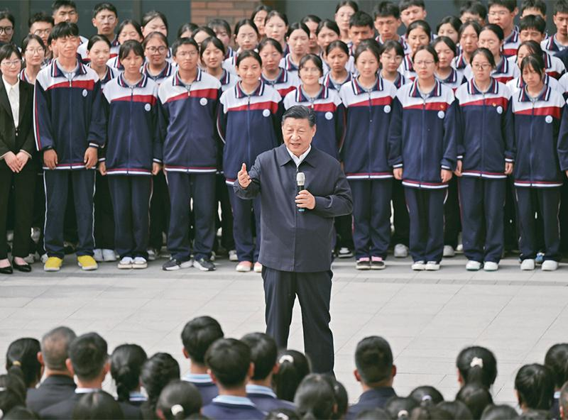

爱国主义不是遥远宏大的口号，是新时代青年刻在心底的信仰。新时代的青年爱国，首先要坚定理想信念，树立正确历史观，读懂党和国家奋斗历史，坚定道路自信、理论自信、制度自信、文化自信。
作为大学生，爱国体现在树立大局意识，自觉维护国家尊严、民族团结与祖国领土完整，理性看待国内外各类社会舆论，明辨是非，抵制错误思潮。
爱国也体现在个人成长之中：把个人理想追求融入国家和民族事业当中。我们不必人人做出惊天动地的伟业，但应当确立报国志向，打磨自身本领。无论是深耕专业科研、投身基层建设、服务社会大众，还是在平凡岗位踏实奋斗，都是青年担当的体现。
生逢中华民族伟大复兴的时代，当代青年与祖国同向同行，既要心怀家国，也要脚踏实地，把满腔爱国热情转化为成长成才的内生动力。
厚植理想信念，读懂党史国史，坚定“四个自信”，认同国家发展道路。
维护民族团结，捍卫祖国统一，尊重多元，守护国家共同利益。
立足专业勤学苦练，练就过硬本领，把个人前途和民族命运相连。
保持独立思考，拒绝偏激冲动，明辨网络谣言，做到理智爱国。
真正的爱国主义，不是网络上的极端宣泄，不是流于表面的形式表态。爱国藏在认真学习的书桌前，藏在尊重团结他人的相处中，藏在客观理性看待世界的眼光里。爱国是内化于心的认同，更是外化于行的坚守。